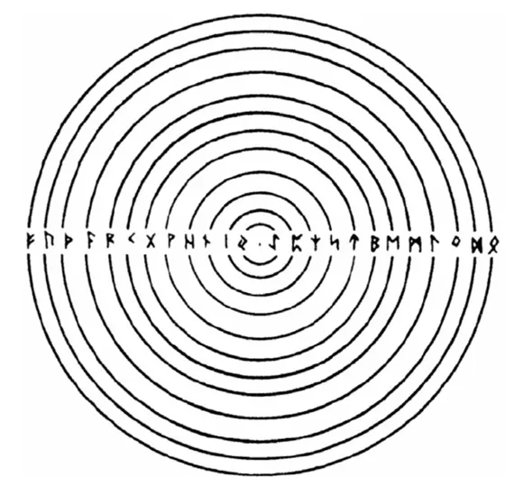
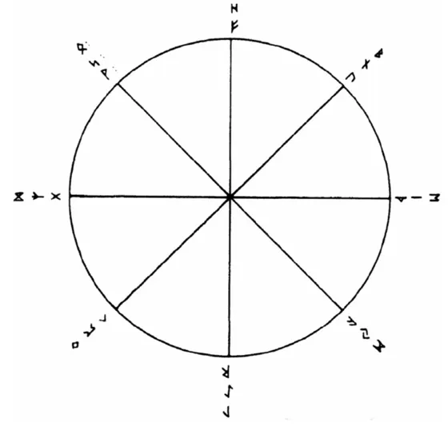

Rune Grimoire
Runic Cosmology
The rune mysteries unfold within a vast cosmological framework. Grasping this structure is essential groundwork before approaching the theories and practice of rune magick.
The Rune World
Prior to the birth of time, only Ginnungagap existed: a "magickally charged void." At its southern edge a realm of fire blazed into being, Muspellsheimr, while at its northern boundary Niflheimr condensed as the "mist world." Waves of frozen rime poured from Niflheimr and filled the northern reaches of the gap, even as Muspellsheimr hurled sparks and glowing matter outward. Between these two extremes, the center held still, "mild as windless air."
Where fire and ice collided, the frozen substance melted and the latent yeast quickened under Muspellsheimr's power. From this reaction the primal giant Ymir took shape, whose name ("the roarer") points to the concept of primal vibration. Ymir was androgynous, and from this being the rime-giant races descended.
The cosmic cow Audhumla materialized from the dripping rime and nourished Ymir with her milk. By licking the salty ice blocks she uncovered the archetypal being Buri, likewise androgynous. Buri's line produced Borr, who took Bestla (daughter of a rime-giant) as his wife. Their three sons were Odin, Vili, and Ve, embodying inspiration, will, and holiness. Together they slew Ymir and shaped the world from the substance of his cosmic body. From this refashioned world they then created the first man and woman, Askr and Embla ("ash" and "elm"), endowing them with a range of spiritual gifts.
Key Principles of the Runic Cosmogony
- There is no personal Creator: cosmogony is seen as a natural and organic process
- The universe ultimately derives from a single source, Ginnungagap, which divides itself into two extremes of fire (expansive energy) and ice (primal matter/antimatter)
- This polarity is mutually attracted, and from their reunion the primal essence and archetypal pattern for manifestation are formed
- From this framework the multiplicity of being evolves
The Nine Worlds
Once creation had been stabilized, the multiverse consisted of Nine Worlds, contained in and supported by the World-Tree, Yggdrasill. These worlds contain countless abodes and dwellings. In the center is Midhgardhr, with the other worlds arrayed around, above, and below it:
- North: Niflheimr (mist world)
- East: Jotunheimr (Etin-world)
- South: Muspellsheimr (fire world)
- West: Vanaheimr (Vanir-world)
- Above Midhgardhr: Ljossalfheimr (light-elf-world)
- Above Ljossalfheimr: Asgardhr (enclosure of the Aesir, which houses many dwellings)
- Below Midhgardhr: Svartalfheimr (black-elf-world, or dwarf-world)
- Below Svartalfheimr: Hel (the silent, still, and sleepy realm of the dead)
Between and among these worlds the runes and their roadways are to be found.
Manifestation of the Rune Row
The manifestation of the runes and their ordering in the Futhark row are bound up with the cosmogonic and cosmological processes. The runes have no point of origin; they are the substance of the latent energy contained in Ginnungagap. The runes exist simultaneously in an undifferentiated state throughout the void, and thus defy comprehension.

Shining Runes and Dark Runes
At the division between Muspellsheimr and Niflheimr, the runic forces are polarized into shining runes (Old Norse heidhrúnar) and dark runes (Old Norse myrkrúnar). These are polarized aspects of the entire corpus of runic power expressed simultaneously. These runic forces attract one another, in order that they might rejoin and create the cosmic seed of manifestation contained in Ymir.
The shining runes and dark runes are reassimilated in a pattern capable of manifestation. The runic forces are at work throughout the cosmogonic processes; however, the runes as we know them have not been manifested, because the entire process, up to the sacrifice of Ymir, takes place in an unmanifested state.
The Sacrifice of Ymir and the Ordering
When Odin, Vili, and Ve sacrifice Ymir (the crystallized seed form of the collective runic pattern), they arrange this runic "substance" in accordance with the multiversal pattern. Thus they "create" the Nine Worlds and Yggdrasill. This primal act brings about cosmic order and manifestation.
At this point the runes are ordered in the Futhark row in their linear form as the primary arrangement at the center of the multiverse. This manifestation unfolds from the "inside out," beginning with the most basic forms of cyclical and vertical force.
The Twelve-Fold Spherical Law
From that point the other runes manifest themselves in a linear pattern governed by a twelve-fold spherical law. As each succeeding circle is manifested, a pair of runes (esoteric concepts) are isolated within the "space." The laws of sympathy and antipathy determine which runes crystallize in each circle. Those same laws govern which of these two concepts will be aligned with which previously manifested rune in the row.
The row thus produced is perceived by the intellect in an order governed by the path of the sun, and thereby the runes manifest their numerical values 1 through 24. These numerical values are also part of the innate relative positions of one mystery to the others, and play a determining role in their ordering.
The Ættir and the Eightfold Star
The ættir are ruled by the pattern of the eightfold "cross" or "star" by which the ancient Northmen divided the heavens. These patterns, as well as those that govern the linear alignment of the staves, are fruitful avenues of meditation and will reveal much wisdom and provide great power to the vitki who can unravel their riddles.

Elements
Throughout the runic cosmology there are forces that might be called "elements," such as fire, water, ice, air, and earth. These are reminiscent of the Platonic-Hermetic elements but are not to be understood as identical with them. Both systems have common roots in the Indo-European spring of wisdom, which recognizes observation of nature (both internal and external) as the most reliable clue to the nature of numinous reality. The proximity of the Northern peoples to the realms of ice led them to recognize the multiversal dichotomy between fire and ice.
| Element | Attributes |
|---|---|
| Fire | Total expansion, heat, all-vibration, archetypal energy |
| Air | All-pervasiveness and omnipresence, formless space, motion, light, intellect, communication |
| Water | Archetypal unmanifested form, evolutionary being, stillness, darkness, unconscious |
| Ice | Total contraction, coldness (distinct from Isa), no-vibration, cohesiveness |
| Earth | Total potential (containing all the others), archetypal manifestation and framework, physical matter, existence |
An intuitive feel for these ideas will serve the vitki well in understanding cosmological mysteries, as well as providing emotional links to the various runes.
Streams of Runic Force
These streams of runic force may be classified according to the realms in which they originate:
- Terrestrial streams run along the surface of the earth
- Heavenly streams circulate in the atmosphere
- Chthonic streams flow in the subterranean sphere
These streams or fields constantly interact upon one another, causing changes and fluctuations in the intensity and form of the force found in each realm. All runes exist in all realms; they are, however, concentrated and intensified in power within the realms most sympathetic to the force they embody.
Through the practices of stadhagaldr and meditation the vitki is able to draw these cosmic streams into their own personal runic sphere, there to be integrated (for increased personal power) or re-projected in order to cause changes in accordance with the will of the vitki.
The word "stream" is perhaps a bit misleading. Actually, these runic forces may be felt as a variety of sensations within the psyche. Some are indeed similar to flowing streams of power; others are akin to waves, or whirlpools, or utter stillness. Each vitki should explore the feel of each rune on its own terms. Once contact has been made, it will be unmistakable.
The Soul and Personal Power
Understanding the old Nordic soul-construct and personal power conceptions is essential, for these play a prominent role in the theories of rune magick.
The Divine Gifts
Certain soul qualities were given to the primal man and woman (coequally and simultaneously) by the triad of gods: Odhinn, Vili, and Ve. In the Voluspa:
Until the Aesir,
mighty and loving,
came from the host
to the coast;
on the land they found
of little might
Askr and Embla
yet unfated.
They had not ond,
they had not odhr,
neither la nor laeti
nor good litr;
Odhinn gave ond,
Hoenir gave odhr,
Lodhurr gave la
and good litr.
The last three gifts indicate external qualities (la: appearance; laeti: movement; litr: health). The two central gifts are:
- Ond is the breath of life, the "spirit" that is the divine spark in mankind and the all-pervasive force that penetrates and animates the multiverse. Akin to the Indian conception of prana (breath) and etymologically connected to Sanskrit atman (soul).
- Odhr is the power of inspiration and ecstasy. The name Odhinn is derived from the same root word. This is the pure and irrational numinous power that is the magickal faculty of gods and men.
Nornic Force and Divine Structure
With the entrance of the Nornic force, time and the laws of cause and effect arise (see Pertho). The infusion of divine structure and consciousness provided by Heimdallr/Odin (see Mannaz) provides another numinous force, handed down through the generations and increased or decreased according to human action.
The Four Soul Entities
- Hugr is the conscious will and intellect
- Hamr is the personal aspect of the plastic image-forming essence in the cosmos, bridging spiritual and physical worlds. A powerful hugr can project this essence to another location in an almost physical manner
- Hamingja means "shape-changing force," "luck," "power." It may be transferred from one person to another, from a person to an object, or projected into space. This force may be increased continuously by ritualized magickal action and deeds of honor
- Fylgja (fetch) is the storehouse of action, symbolized by a female figure, an animal, or a crescent shape. Fylgja imparts the orlog (fate) of the person in accordance with past action
Both hamingja and fylgja may be passed from one generation to the next as a type of "reincarnation."
Dynamistic and Animistic Forces
The forces at work in magick fall broadly into two categories. Dynamistic powers are largely mechanistic, operating without significant consciousness. The runes themselves belong in this category. Animistic forces include all the various wights, gods (Aesir and Vanir), elves, dwarves, and giants. The gods are archetypes: exemplary models of consciousness perceived as animate primordial images.
These archetypal models also serve as powerful tools in magick, functioning either as internal consciousness factors or as symbols and vehicles for consciously directed power in invocatory rites.
Communication as the Core Pattern
Regardless of the type of power a magician works with, the fundamental pattern of action is communication. The runes form a channel of connection between the will of the vitki and the universe.
Personal Runes and World Runes
Rune streams permeate the multiverse and have corresponding structures within the personal sphere, seated in the hamingja. The "personal runes" and "world runes" are consciously synthesized in the magickal act. This synthesis is the essence of the Old Norse concepts heill (holy, wholeness) and heill hugr (whole mind).
The rune staves act as keys, granting access to these streams both within the self and in the causal multiversal realms. Through willed ritual action, the vitki manipulates the runic forces across the Nine Worlds. Through the laws of Pertho, these actions become manifest.
The God-Forms
The god-forms housed in the rune realms are holy archetypes and consciousness modalities that preexisted human self-consciousness but are intensified by human action. Each type of wight inhabits a world suited to its kind, though no well-defined borders separate most of these realms.
The Tripartite Divine Society
The runic god-forms can be understood through a threefold matrix plus a fourth category (see Mannaz):
- Sovereignty (dual: judicial and magickal kingship)
- Strength (the warrior function)
- Production (dual: the divine twins and the holy brother and sister)
The major deities align accordingly:
- The Judge-King (Tiwaz/Tyr) or the Priest-Magician (Odin)
- The Warrior (Thor, in his oldest aspect)
- The Providers (Freyja and Freyr, or Alcis)
Odin has aspects in all three levels. Freyja likewise spans all three: goddess of fertility, teacher of seidhr magick to Odin, and half of all warriors slain in battle go to her in Folkvangr.
The fourth category encompasses "deified" dynamistic forces: the sun (Sunna/Sol), the moon (Mani), and fire (embodied in Kenaz, Nauthiz, and Dagaz).
Applying the Divine Paradigm in Ritual
- Third function (Freyja, Freyr): powerful aids in rites of fertility, art, craft, wealth, and eroticism
- Second function (Thor): rules in operations of protection, defense, liberation, and curses
- First function, Tyr aspect: most valuable in rites of law, order, justice, and victory
- First function, Odin aspect: the most comprehensive, especially powerful in rites to obtain wisdom, numinous knowledge, personal power, and to bind or constrict enemies
Like Odin, the vitki should search restlessly across all worlds, seeking wisdom and power, always willing to sacrifice self to self, and constantly sharing that wisdom with others of like mind.